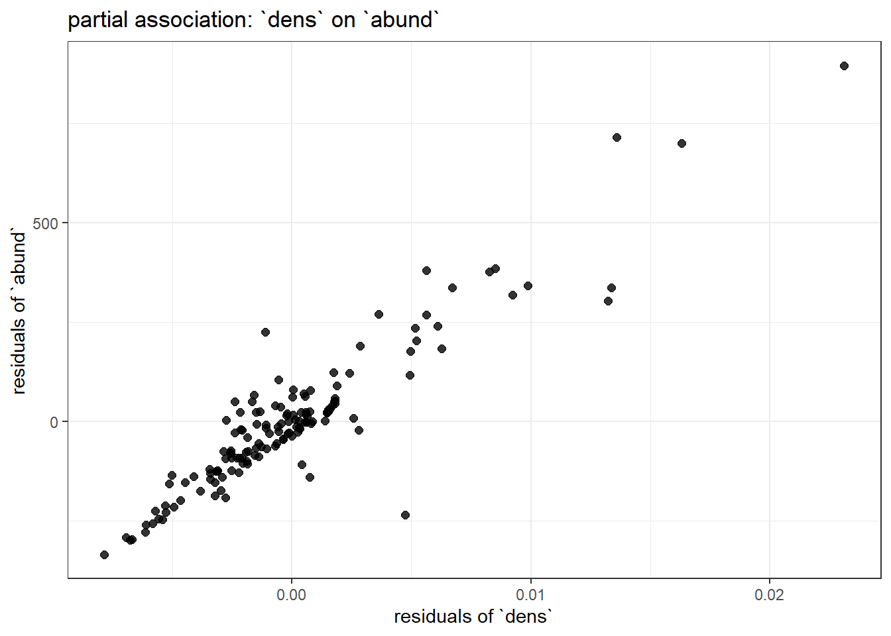
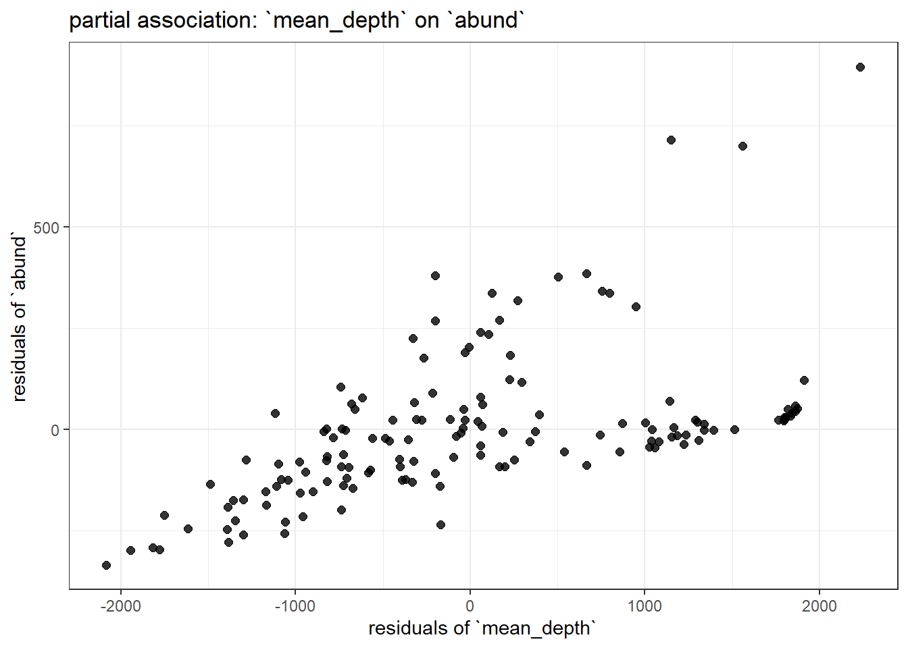

source("class_r_scripts/load_packages.r")23 Tutorial: Partial Associations
23.1 How a GLM works (for partial associations)
A key strength of a GLM is that it can estimate the association between a predictor and an outcome while simultaneously accounting for other variables in the model; that is, it can quantify partial associations rather than just simple bivariate relationships. It helps to remember that when a model includes multiple predictors, its coefficients describe partial associations, which are defined with respect to:
how variation in one predictor relates to the response after accounting for other predictors in the model
Although R (and other great software) estimates these quantities automatically (i.e. behind-the-scenes), it can be helpful to unpack what “controlling for” actually means. This can help demystify the GLM (or even general linear regression) framework. In this brief tutorial, we strip the GLM down and explain how partial associations are calculated by the model.

23.2 Residualization
One intuitive way to do this is through residualization. By successively removing the variation explained by a covariate, we can isolate any remaining structure in the data (using residuals) and then examine how that relates to the response variable. The sequence below reproduces –almost exactly– the coefficient for a single predictor in a GLM.
23.3 Residualization: Two model predictors
First, we begin with the previously examined dataset of Lepusantilocapra pufferi (puffer jackalope). Again, you will need to set up with R space, including loading R packages and reading in the example dataset.
And you will need the following file (simply click to save):
Read these data into R:
pufferi <- read.csv("class_exercise_data/lepusantilocapra_pufferi_abundance.csv")
str(pufferi) # examine data structure'data.frame': 146 obs. of 9 variables:
$ site : int 1 2 3 4 5 6 7 8 9 10 ...
$ abund : int 76 161 39 410 177 695 352 674 624 736 ...
$ dens : num 0.00207 0.00352 0.000981 0.008039 0.005933 ...
$ mean_depth: int 804 808 809 848 853 960 977 982 985 986 ...
$ year : int 1978 2001 2001 1979 2002 1980 1981 1979 1982 1980 ...
$ period : int 1 2 2 1 2 1 1 1 1 1 ...
$ x_km : num 98.8 76.8 103.8 91.5 107.1 ...
$ y_km : num -57.5 178.6 -50.1 146.4 -37.1 ...
$ swept_area: num 36710 45741 39775 51000 29831 ...We will adopt a model good enough for a short example (even though we established that this is a poorly specified model):
The goal of this exercise is to estimate the partial association between mean_depth and abund. That is, we are trying to estimate the effect of mean_depth on abund after accounting for dens.
There are three steps for this example. To go through the steps, click on each of the callout boxes below to work through the process of estimating partial effects in a GLM. For the sake of clarity, I only include two covariates. Also note that, for the sake of clarity, I use a lengthy object name that does not use snake_case.
NoteRepeat this logic for
dens
You could do the same thing for dens and find its partial association with abund after controlling for mean_depth.
# residual of focal, controlling for non-focal
mod_DENS_on_DEPTH <- glm(dens ~ mean_depth, data = pufferi)
dens_resid <- resid(mod_DENS_on_DEPTH)
# residual of effect of non-focal predictor
mod_ABUND_on_DEPTH <- glm(abund ~ mean_depth, data = pufferi)
abund_resid <- resid(mod_ABUND_on_DEPTH)
# overall residual effect
mod_resid_dens <- glm(abund_resid ~ dens_resid, data = pufferi)23.3.1 Plotting all the residuals
ggplot(data.frame(dens_resid = dens_resid,
abund_resid = abund_resid),
aes(x = dens_resid, y = abund_resid)) +
geom_point(size = 2, alpha = 0.8) +
labs(
x = "residuals of `dens`",
y = "residuals of `abund`",
title = "partial association: `dens` on `abund`"
) +
theme_bw()
ggplot(data.frame(depth_resid = depth_resid,
abund_resid = abund_resid),
aes(x = depth_resid, y = abund_resid)) +
geom_point(size = 2, alpha = 0.8) +
labs(
x = "residuals of `mean_depth`",
y = "residuals of `abund`",
title = "partial association: `mean_depth` on `abund`"
) +
theme_bw()
Examine the summary of modbase to compare the coefficients for mean_depth and dens to the variation in each of these plots. You should immediately notice the one with less residual structure (more clustered around the regression line) has the larger effect size.
23.4 Residualization: Two model predictors
The above example clearly illustrates how residualization works for a model with two predictors. But what about a model with >2 predictors? We will simply add one of the other potential predictors (period) to our base model from above. Again, this is a rather nonsensical formulation:
Call:
glm(formula = abund ~ mean_depth + dens, data = pufferi)
Coefficients:
Estimate Std. Error t value Pr(>|t|)
(Intercept) 3.858e+01 1.926e+01 2.003 0.0471 *
mean_depth -3.730e-04 5.833e-03 -0.064 0.9491
dens 3.787e+04 1.318e+03 28.735 <2e-16 ***
---
Signif. codes: 0 '***' 0.001 '**' 0.01 '*' 0.05 '.' 0.1 ' ' 1
(Dispersion parameter for gaussian family taken to be 5082.682)
Null deviance: 7067483 on 145 degrees of freedom
Residual deviance: 726824 on 143 degrees of freedom
AIC: 1665.2
Number of Fisher Scoring iterations: 2Let us go through the three steps again.
23.5 Residualization: More than two model predictors
For more than two model predictors, the number of steps increases. But, arguably, the complexity does not. The logic is still the same:
A predictor’s coefficient equals the relationship between the parts of the outcome and that predictor that remain after removing the influence of all other variables (residuals!)
Here is a new model with a third predictor (period) added:
mod_full <- glm(abund ~ mean_depth + dens + period, data = pufferi)
summary(mod_full)
Call:
glm(formula = abund ~ mean_depth + dens + period, data = pufferi)
Coefficients:
Estimate Std. Error t value Pr(>|t|)
(Intercept) 5.345e+01 2.821e+01 1.895 0.0601 .
mean_depth -9.281e-04 5.893e-03 -0.158 0.8751
dens 3.764e+04 1.359e+03 27.702 <2e-16 ***
period -9.265e+00 1.282e+01 -0.723 0.4710
---
Signif. codes: 0 '***' 0.001 '**' 0.01 '*' 0.05 '.' 0.1 ' ' 1
(Dispersion parameter for gaussian family taken to be 5099.716)
Null deviance: 7067483 on 145 degrees of freedom
Residual deviance: 724160 on 142 degrees of freedom
AIC: 1666.7
Number of Fisher Scoring iterations: 2Below is the way in which we would calculate –by residualization– the partial association coefficient between one predictor (mean_depth) and abund (controlling for dens and period). You can apply the same process to the other two predictors. Click on each callout box to expand.
23.6 Summary
The goal of this tutorial was to demystify the mathematics of regression so that it feels like a transparent tool rather than a black box. We showed that a partial coefficient is simply the relationship between the leftover variation in a predictor and the leftover variation in the response after accounting for other variables. It really is that simple.